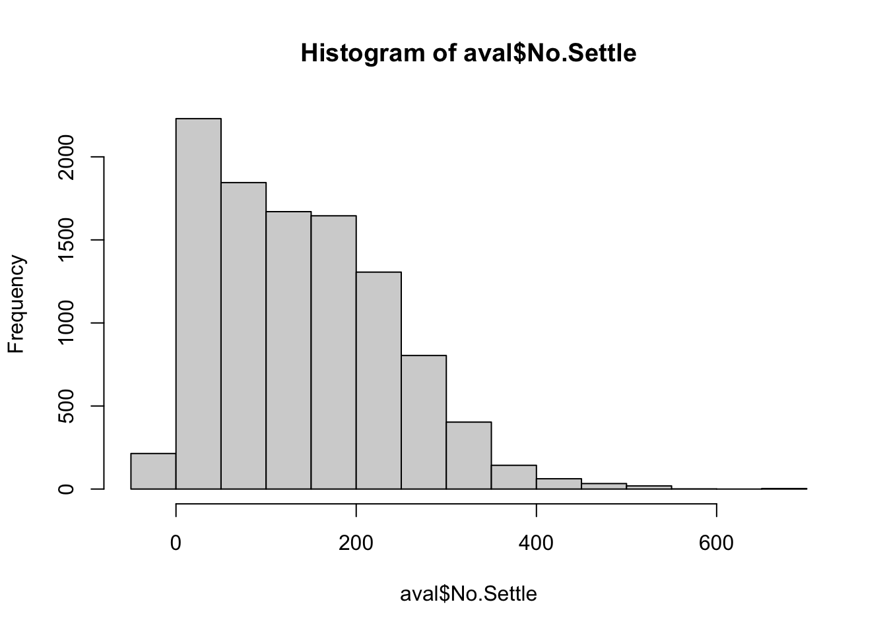

We begin by doing the following: 1. Change the ‘Date’ variable to a Date class and extract the year, month and day of year (doy) as new variables. 2. Create a new variable called ‘Season’ that groups the months together into seasons 3. Ensure text variables are character classes and that indicators are factors 4. Create a new variable for the response called FAH_ord, that casts FAH as a factor and assigns the different values to ordered levels 5. Convert all the wind direction and aspect variables to their sine and cosine versions so that degrees that are far apart numerically but close together geographically would be close together numerically as well (ex. 0 degrees and 350 degrees).
Some specific questions regarding the data: 1. Is longitude and latitude constant within OSgrid? 2. Is Alt constant within OSgrid?
# should we add area, i.e. do multiple areas exist per (Date, OSgrid)aval %>%count(Date, OSgrid, Area) %>%count(Date, OSgrid) %>%filter(n >1) # there are some, so add area.
Date OSgrid n
1 2012-03-25 NN189742 2
2 2012-03-26 NN189742 2
3 2012-03-27 NN189742 2
4 2012-03-28 NN189742 2
Some of these rows don’t just differ by NA, but have conflicting numeric values. For these, keep both records, but for those that only differ by an NA, collapse the rows to keep the most numeric values per column.
## 0) Define and validate keys -----------------------------------------------key_cols <-c("Date", "OSgrid", "Area")missing_keys <-setdiff(key_cols, names(aval))if (length(missing_keys)) {stop("These key columns are not in `aval`: ", paste(missing_keys, collapse =", "))}## 1) Build candidate non-key columns once (and be explicit) -----------------non_key_cols <-setdiff(names(aval), key_cols)## 2) Find conflicts in ANY column type (numeric OR categorical) -------------# - use any_of() so it won't error if something is off# - n_distinct on na.omit for each column within the keywide_conflicts <- aval %>%group_by(across(all_of(key_cols))) %>%summarise(across(all_of(non_key_cols), ~n_distinct(na.omit(.x)), .names ="nuniq_{.col}"),.groups ="drop" ) %>%# mark groups where any column has >1 distinct observed valuemutate(any_conflict =if_any(starts_with("nuniq_"), ~ .x >1)) %>%filter(any_conflict) %>%select(all_of(key_cols)) %>%distinct()## 3) Collapse only conflict-free groups -------------------------------------# typed NA + first_non_na for safe collapsingfirst_non_na <-function(x) { i <-which(!is.na(x))[1]if (is.na(i)) x[NA_integer_] else x[i]}collapsed_ok <- aval %>%anti_join(wide_conflicts, by = key_cols) %>%group_by(across(all_of(key_cols))) %>%summarise(across(all_of(non_key_cols), first_non_na),.rows_collapsed = dplyr::n(),.collapsed =TRUE,.groups ="drop" )## 4) Keep conflicting groups as-is (flag them) -------------------------------kept_conflicts <- aval %>%semi_join(wide_conflicts, by = key_cols) %>%mutate(.collapsed =FALSE)## 5) Combine and (optionally) drop flags ------------------------------------aval_dups_resolved <-bind_rows(collapsed_ok, kept_conflicts) %>%arrange(across(all_of(key_cols)))aval <- aval_dups_resolved %>%select(-.collapsed, -.rows_collapsed)
Investigate missing data
Visualise missingness
Determine the percentage missing values per variable and visualise this.
From the above, only 10 variables have more than 5% of their values missing. Careful attention is paid to these below. The remaining variables have \(<5\%\) missing values and will simply be imputed with a Bagged-tree imputation approach.
Of the variables missing more than 5%, we first need to determine if the missingness carries meaning. The list of variables is thus split in two, one where missingness does carry meaning and need to be accounted for and one where it does not.
The variables that do need to be accounted for are: - AV.Cat (23.4%): Missing avalanche category values likely mean that no category was assigned for that day. Forecasters usually provide a category when avalanches are observed or when conditions are clear enough to classify. If it is missing, that could itself indicate that avalanches were not observed or that conditions were uncertain, which is meaningful information about overall stability.
Ski.Pen (22.5%): Ski penetration is only recorded when conditions allow observers to ski on the slope. If this field is missing, it often means the snow was too hard, too shallow, or otherwise unsuitable for skiing. This absence therefore reflects snow surface properties that can be related to avalanche hazard.
Crystals (9.3%): Crystal type is identified through snow-pit observations. Missing values here often mean that no pit was dug on that day, which in turn may depend on perceived stability, time constraints, or safety concerns. Thus, the lack of a crystal observation can itself provide information about conditions.
Wetness (5.4%): Wetness is typically noted when meltwater or damp snow is present. If this field is missing, it may indicate that the snow was dry and that observers did not see a reason to record wetness. Hence, missingness can indirectly point to dry-snow conditions.
Snow.Index (7.0%): This is a derived stability metric based on snowpack tests. If the value is missing, it likely means the relevant tests were not carried out, perhaps because conditions didn’t warrant them. This absence can therefore reflect judgments about snow stability.
Summit.Wind.Dir_sin / Summit.Wind.Dir_cos (12.4%), Summit.Wind.Speed (8.5%), and Summit.Air.Temp (7.1%): Missing summit weather variables may not just be sensor errors. It is plausible that readings were unavailable because weather at the summit was too extreme or dangerous for measurement, such as during storms or blizzards. In that case, missingness itself could be linked to hazardous conditions.
For each of these, an indicator will be created to show if the value was missing.
Those variables that do not need explicit missingness indicators are:
Max.Temp.Grad (6.7%): This variable reflects temperature gradients measured in snow-pit tests. When missing, it is usually because the snow-pit test was not performed. However, the decision not to perform a pit is already captured by other variables where missingness is more clearly informative (e.g. Crystals, Snow.Index). Adding another indicator here would add redundancy without extra insight. The values themselves will be imputed with KNN.
Max.Hardness.Grad (5.9%): Like Max.Temp.Grad, hardness gradients are only measured in pits. Missing values again overlap with the same “pit not performed” scenario already captured by other indicators. For this reason, a separate indicator is unnecessary. The variable will be imputed with KNN to fill the missing numeric values.
After the relevant indicators are created, all remaining missing values will be imputed with Bagged tree imputation. Bagged tree imputation is a machine-learning approach where missing values in a variable are predicted using an ensemble of decision trees fit on the observed cases. Each tree is trained on a bootstrap sample of the data, and predictions are averaged across trees to produce stable and robust imputations. Unlike simple mean/median imputation or KNN, bagged trees can capture non-linear relationships and interactions among predictors, making them well suited to complex, structured data.
In the avalanche dataset, where variables combine topography, weather, and snowpack characteristics, and missingness can depend on multiple interacting factors, bagged tree imputation offers a principled way to exploit those dependencies while limiting noise from any single predictor. This allows us to fill gaps more realistically while preserving the multivariate structure that is important for downstream modeling with neural networks.
The imputation will be done at a later stage. At first, the data still needs to be cleaned. Note that these missing values were intentionally set now before looking at improbable or outlier values below that are then encoded as NA. The reason for this is to truly only capture “meaningful” missingness in these indicators and not convolute them with missingness due to incorrect values being entered.
The following variables seemed reasonable in terms of outliers or impossible values: 1. AV.Cat 2. Crystals 3. Summit.Air.Temp 4. Max.Hardness.Grad 5. Air Temperature 6. Summit.Wind.Speed (assume wind speeds are in km/h) 7. Wind.Speed (assume wind speeds are in km/h)
The remaining numerical variables were all cleaned.
Ski Penetration
hist(aval$Ski.Pen)
length(which(aval$Ski.Pen<0))
[1] 4
# remove all values <0:aval$Ski.Pen[aval$Ski.Pen<0] <-NA_real_
Snow Index
Snow.Index is a derived stability score based on field observations such as penetration tests, hardness gradients, and crystal type.
Initial suspicion: At first glance, the distribution of Snow.Index raised concerns because the vast majority of observations (over 7,700 of 10,671) had a value of zero, with only 57 unique values overall. Given the large number of missing entries in related snowpit variables, this pattern suggested that a zero might be functioning as a placeholder for “no measurement taken,” rather than a genuine stability score.
Let’s try to confirm this suspicion by doing some checks. The following table looks at the distribution of values for other variables whre Snow.Index is zero.
# Which rows have Snow.Index == 0 ?idx_zero <- aval$Snow.Index ==0# Compare % missing in other key variables for zero vs non-zero Snow.Indexaval %>%mutate(group =case_when( Snow.Index ==0~"Zero",is.na(Snow.Index) ~"NA",TRUE~"Non-zero" )) %>%summarise(across(c(Ski.Pen, Foot.Pen, Crystals, Wetness, Max.Temp.Grad, Max.Hardness.Grad),~mean(is.na(.)), .names ="{.col}_missing_rate"),n =n(),.by = group )
# A tibble: 3 × 8
group Ski.Pen_missing_rate Foot.Pen_missing_rate Crystals_missing_rate
<chr> <dbl> <dbl> <dbl>
1 Non-zero 0.554 0.00325 0.167
2 NA 0.569 0.0148 0.674
3 Zero 0.101 0.00309 0.0165
# ℹ 4 more variables: Wetness_missing_rate <dbl>,
# Max.Temp.Grad_missing_rate <dbl>, Max.Hardness.Grad_missing_rate <dbl>,
# n <int>
Further inspection: However, when the missingness patterns were examined, rows with a Snow.Index of zero showed very low missingness in other snowpit variables (typically less than 10%). This indicates that these zeros are not simply standing in for absent measurements. Instead, they appear to represent true observations where no instability was detected. On this basis, zeros were retained as valid values, and only genuine missing entries (NA) were flagged for imputation.
Wetness
hist(aval$Wetness)
unique(aval$Wetness) # looks more like an index, keep as is.
[1] 1 0 NA 10 2 6 3 4 -1
# length(which(aval$Wetness>9))
Insolation
Insolation measures the incoming solar radiation at the observation site, here recorded on a coded scale ranging mostly from 0–20. This index reflects sunlight exposure, which plays an important role in snowpack warming and wet-snow avalanche activity. A small number of observations fall outside the expected range, including negative values and extreme outliers above 20 (e.g., -55, 106, 208). Since these are not physically meaningful, they were treated as data entry errors and recoded as missing for later imputation.
# encode <0 and >20 as NAaval$Insolation[which(aval$Insolation<0| aval$Insolation>20)] <-NA_real_
Snow Temperature
Snow.Temp records the snowpack temperature in degrees Celsius. Values in this dataset range from -13 to 124 °C. Since snow cannot persist above 0 °C, values above 5 °C were considered physically implausible and were recoded as missing for later imputation. Negative values down to -13 °C were retained as realistic cold-snow conditions.
# make all values above 5 NAaval$Snow.Temp[which(aval$Snow.Temp>5)] <-NA_real_
Aspect
Aspect describes the compass direction of the slope, measured in degrees clockwise from north (0–360°). It influences how much solar radiation a slope receives and therefore affects snow metamorphism and avalanche risk. In the dataset, any values outside the valid range of 0–360° were considered invalid and recoded as missing for later imputation.
hist(aval$Aspect)
length(which(aval$Aspect>360)) # only 8- make these NA
[1] 8
length(which(aval$Aspect<0)) # only 4- make these NA
[1] 4
# make values >360 and <0 NA:aval$Aspect[which(aval$Aspect<0| aval$Aspect>360)] <-NA_real_
No.Settle
hist(aval$No.Settle) # looks fine

Total Snow Depth
Total Snow depth represents the measured thickness of the snowpack in centimeters. Most values lie between 0–500 cm, which is consistent with expected conditions in the observation areas. Negative values are not physically possible, while a small number of extreme outliers above 500 cm were judged unrealistic for the region. These implausible entries were recoded as missing for later imputation.
hist(aval$Total.Snow.Depth)
length(which(aval$Total.Snow.Depth>500)) # only 14
Wind direction values less than 0° or greater than 360° are not physically possible. Since the source of these errors is unknown, they were treated as missing (NA) rather than corrected by assumption. These missing values will later be imputed using bagged-tree models, with a corresponding missingness indicator retained to capture any systematic patterns in measurement failure.
# length(which(aval$Summit.Wind.Dir>360)) # 4# length(which(aval$Summit.Wind.Dir<0)) # 191# length(which(aval$Wind.Dir>360)) # 1# length(which(aval$Wind.Dir<0)) # 13# assign NA to these and the cos and sin versions:# 1) Identify invalid entries (out of [0, 360])idx_wind_invalid <-!is.na(aval$Wind.Dir) & (aval$Wind.Dir <0| aval$Wind.Dir >360)idx_summit_invalid <-!is.na(aval$Summit.Wind.Dir) & (aval$Summit.Wind.Dir <0| aval$Summit.Wind.Dir >360)# sum(idx_wind_invalid) # 14# sum(idx_summit_invalid) # 195# 2) Set invalid directions to NAaval$Wind.Dir[idx_wind_invalid] <-NA_real_aval$Summit.Wind.Dir[idx_summit_invalid] <-NA_real_
Foot Penetration
Foot penetration measures the depth in centimeters that an observer’s boot sinks into the snow surface. It reflects snow hardness and helps assess surface stability. Typical values range from a few centimeters in firm snow to over a meter in very soft conditions. In the dataset, negative values and extreme entries above 100 cm were judged implausible and recoded as missing for later imputation.
Incline represents the slope angle at the observation site, recorded in degrees. Since slope angle is central to avalanche release, accurate measurement is critical. Values should range from 0° (flat) to 90° (vertical). In the dataset, negative values and outliers above 90° were considered invalid and recoded as missing for later imputation.
Cloud represents the observed cloud cover, recorded as a percentage from 0 (clear sky) to 100 (fully overcast). This variable provides important context for snowpack conditions, since cloud cover influences surface cooling, radiation balance, and melting. In the dataset, most values fell within the expected 0–100% range. A small number of impossible values (e.g., -1) were considered data entry errors and recoded as missing for later imputation.
In avalanche datasets, Max.Temp.Grad = Maximum Temperature Gradient within the snowpack profile.When snow profiles are dug, forecasters often measure snow temperature at different depths (surface, mid-pack, base). They then compute the temperature gradient (°C per 10 cm) between layers. The maximum gradient across all measured layers is recorded as Max.Temp.Grad.
In general, we would expect values between 0-5 to be very common, 5-10 to be less common, but plausible and values of greater than 10 to be very rare. Any value greater than 10 was assumed to be an error and was replaced with an NA value.
hist(aval$Max.Temp.Grad) # clear outliers/ noise, a value of 130 is physically impossible
Altitude values greater than 1400 m or less than 0 m are physically impossible within the Scottish study area (highest peak 1345 m). These were treated as missing for later imputation.
hist(aval$Alt[aval$Alt<2000])
# length(which(aval$Alt>10000)) # only 2aval$Alt[aval$Alt <0| aval$Alt >1400] <-NA_real_
# sum(is.na(aval$Alt)) # now 9 are missing
After replacing impossible values with NA, 9 observations had missing Altitude. Longitude and latitude were found to be constant within each OSgrid, i.e. each OSgrid corresponds to a unique coordinate pair. However, altitude was not unique within these coordinates, suggesting that the OSgrid represents an area grid of unknown size, while the longitude and latitude are specific sampling points within that grid.
To impute missing Altitude values, an open-source elevation API will be queried at the recorded longitude and latitude of each observation. This approach assumes that altitude variation within the grid is limited, and that the elevation at the given coordinates is representative for the corresponding observation.
When doing this, it was noticed that one of the altitudes was zero. Upon further investigation, the point was found to be in Loch Fyne (Sea Loch), and was thus assumed to be an erroroneous longitude and latitude.
# --- 1) Helper: call Open-Elevation for a batch of lat/lon points ---# Expects a tibble/data.frame with columns: latitude, longitude# Returns: tibble(latitude, longitude, elev_m)oe_lookup_batch <-function(points_df) {if (nrow(points_df) ==0) return(tibble(latitude =numeric(), longitude =numeric(), elev_m =numeric()))# Build "lat,lon|lat,lon|..." string locs <- points_df %>%transmute(pair =sprintf("%.6f,%.6f", latitude, longitude)) %>%pull(pair) %>%paste(collapse ="|") url <-paste0("https://api.open-elevation.com/api/v1/lookup?locations=", URLencode(locs)) resp <-request(url) |>req_timeout(30) |>req_perform()if (resp_status(resp) !=200) {warning("Open-Elevation request failed with status: ", resp_status(resp))return(tibble(latitude =numeric(), longitude =numeric(), elev_m =numeric())) } dat <-resp_body_json(resp, simplifyVector =TRUE) res <-as_tibble(dat$results)# API returns 'elevation' (meters), 'latitude', 'longitude' res %>%transmute(latitude =as.numeric(latitude),longitude =as.numeric(longitude),elev_m =as.numeric(elevation) )}# --- 2) Wrapper: batch over many points, with simple rate limiting & safety ---oe_lookup <-function(points_df, batch_size =80, sleep_secs =1) {# round coords to reduce accidental duplicates/float precision issues pts <- points_df %>%transmute(latitude =round(as.numeric(latitude), 6),longitude =round(as.numeric(longitude), 6) ) %>%distinct() batches <-split(pts, ceiling(seq_len(nrow(pts)) / batch_size)) safe_batch <-safely(oe_lookup_batch, otherwise =tibble(latitude=numeric(), longitude=numeric(), elev_m=numeric())) results <-map(batches, function(b) { out <-safe_batch(b)Sys.sleep(sleep_secs)if (!is.null(out$error)) warning("Batch failed: ", out$error) out$result })bind_rows(results)}# --- 3) Apply to your data: only rows with missing Alt ---# Assumes your data frame is named `aval` and has columns Alt, latitude, longitudeto_fill <- aval %>%filter(is.na(Alt)) %>%transmute(latitude = latitude, longitude = longitude)elev_tbl <-oe_lookup(to_fill, batch_size =80, sleep_secs =1)# --- 4) Join back and fill Alt where missing ---# 1) Build a lookup key on the API results (rounded to match request precision)elev_lu <- elev_tbl %>%mutate(key =paste0(round(latitude, 6), "_", round(longitude, 6))) %>%select(key, elev_m)# one of the values is zero altitude: this is in the ocean (see map)# Coordinates whose elevation came back as exactly 0zero_pts <- elev_tbl %>%filter(!is.na(elev_m), elev_m ==0) %>%transmute(x =round(longitude, 6), y =round(latitude, 6)) %>%distinct()
Replace this longitude and latitude with the average longitude and latitude in the area.
# fixing the incorrect long and lat valueaval %>%filter(round(longitude, 6) == zero_pts$x,round(latitude, 6) == zero_pts$y)
# average long and lat in the area:mean_coord <- aval %>%filter(Area =="Creag Meagaidh") %>%summarise(mean_lon =mean(longitude, na.rm =TRUE),mean_lat =mean(latitude, na.rm =TRUE) )# known bad coordinates (round to avoid float mismatch)bad_lon <-round(as.numeric(zero_pts$x), 6)bad_lat <-round(as.numeric(zero_pts$y), 6)# replacement mean valuesmean_lon <- mean_coord$mean_lonmean_lat <- mean_coord$mean_lat# replace in avalaval <- aval %>%mutate(longitude =if_else(round(longitude, 6) == bad_lon &round(latitude, 6) == bad_lat, mean_lon, longitude),latitude =if_else(round(longitude, 6) == bad_lon &round(latitude, 6) == bad_lat, mean_lat, latitude) )
to_fill <- aval %>%filter(is.na(Alt)) %>%transmute(latitude = latitude, longitude = longitude)elev_tbl <-oe_lookup(to_fill, batch_size =80, sleep_secs =1)# --- 4) Join back and fill Alt where missing ---# 1) Build a lookup key on the API results (rounded to match request precision)elev_lu <- elev_tbl %>%mutate(key =paste0(round(latitude, 6), "_", round(longitude, 6))) %>%select(key, elev_m)# 2) Build the same key for your aval rowsaval_key <-paste0(round(aval$latitude, 6), "_", round(aval$longitude, 6))# 3) Match each aval row to the API elevationmatch_idx <-match(aval_key, elev_lu$key)alt_from_api <- elev_lu$elev_m[match_idx] # will be NA where no API result# 4) Replace Alt in place ONLY where it's missing and we have a lookup valuefill_idx <-is.na(aval$Alt) &!is.na(alt_from_api)aval$Alt[fill_idx] <- alt_from_api[fill_idx]# 5) Quick checkcat("Alt missing before fill:", sum(is.na(aval$Alt)) +sum(fill_idx ==TRUE), "\n")
Alt missing before fill: 9
cat("Alt missing after fill :", sum(is.na(aval$Alt)), "\n")
Note that imputation will be done after this as we will be using bagged trees and want to avoid data leakage. Also note that the split is not random, since this is time series data. Thus the first 70% of the data is the training set.
# STEP 1 — Target + time-based splits ---------------------------------------set.seed(7)# 0) Ensure the columns we need exist & are the right typestopifnot(all(c("Date") %in%names(aval)))# If FAH_ord doesn't exist or isn't correctly ordered, (re)create it from FAHtarget_levels <-c("Low","Moderate","Considerable -","Considerable +","High")if (!("FAH_ord"%in%names(aval)) ||!is.ordered(aval$FAH_ord) ||!identical(levels(aval$FAH_ord), target_levels)) {stopifnot("FAH"%in%names(aval)) aval <- aval %>%mutate(FAH_ord =factor(FAH, levels = target_levels, ordered =TRUE))}# Parse Date robustly if neededif (!inherits(aval$Date, "Date")) { aval <- aval %>%mutate(Date =as.Date(parse_date_time( Date, orders =c("ymd HMS","ymd HM","ymd","dmy HMS","dmy HM","dmy") )))}# Drop rows with missing target or Date (NNs can't train on NA targets)aval <- aval %>%filter(!is.na(Date), !is.na(FAH_ord))# 1) Create time-based splits: 70% train, 15% val, 15% test by calendar timecut1 <-quantile(aval$Date, probs =0.70, na.rm =TRUE, type =1)cut2 <-quantile(aval$Date, probs =0.85, na.rm =TRUE, type =1)train <- aval %>%filter(Date <= cut1)val <- aval %>%filter(Date > cut1 & Date <= cut2)test <- aval %>%filter(Date > cut2)# Sanity checks: no overlap & correct orderingstopifnot(max(train$Date) <min(val$Date), max(val$Date) <min(test$Date))# 2) Quick class balance check (important for NN)cat("Train date range: ", min(train$Date), "to", max(train$Date), "\n")
Train date range: 14595 to 18668
cat("Val date range: ", min(val$Date), "to", max(val$Date), "\n")
Val date range: 18669 to 19405
cat("Test date range: ", min(test$Date), "to", max(test$Date), "\n\n")
Note the imbalance in FAH_ord. The test set has no High cases. But, the training set has enough data to train on to be able to identify High risk cases.
Pre-processing data
# STEP 2 — NN-ready preprocessing with recipes --------------------------------# 1) Choose columns to DROP (IDs, raw angles, dates, free text) ---------------drop_cols <-intersect(c("FAH", # raw target (we'll use FAH_ord)"Date", "DateTime", # time stamps (we keep year/month/doy/season)"Wind.Dir", "Summit.Wind.Dir", "Aspect", # raw angles (keep sin/cos)"OSgrid", # grid ID (too high-cardinality for one-hot)"Location"# often messy/free-text; drop for NN baseline ),names(train))# 2) Identify informative-missing flags so we can avoid scaling them ----------flag_prefixes <-c("av_cat_missing", "ski_pen_missing", "crystals_missing","wetness_missing", "snow_index_missing","summit_wind_dir_missing", "summit_wind_speed_missing", "summit_air_temp_missing")flag_cols <-unique(unlist(lapply(flag_prefixes, function(p) grep(p, names(train), value =TRUE))))# You may have named them with `_initial`. If so, they’ll be picked up by grep above.# 3) Build the recipe ---------------------------------------------------------rec <-recipe(FAH_ord ~ ., data = train) %>%# drop columns we don't want to feed to the NNstep_rm(all_of(drop_cols)) %>%# explicitly confirm Area is a predictor (this line is optional, since it’s already a predictor by default)update_role(Area, new_role ="predictor") %>%# collapse *very* rare categories to "other"step_other(all_nominal_predictors(), threshold =0.005, other ="other") %>%# impute categoricals by modestep_impute_mode(all_nominal_predictors()) %>%# impute numerics by bagged treesstep_impute_bag(all_numeric_predictors()) %>%# one-hot encode categoricalsstep_dummy(all_nominal_predictors(), one_hot =TRUE) %>%# drop zero-variance and near-zero-variance columnsstep_zv(all_predictors()) %>%step_nzv(all_predictors()) %>%# scale/center numerics (excluding the missingness flags)step_normalize(all_numeric_predictors(), -all_of(flag_cols))# 4) Prep on TRAIN only, then bake to splits ---------------------------------rec_prep <-prep(rec, training = train, retain =TRUE)# this calculates the mean/sd for scaling, finds the mode of categoricals, trains the bagged trees for imputation.x_train <-bake(rec_prep, new_data = train) # apply to train setx_val <-bake(rec_prep, new_data = val) # apply to val setx_test <-bake(rec_prep, new_data = test) # apply to test set# 5) Quick sanity checks ------------------------------------------------------cat("Shapes:\n")
set.seed(123)# --- (B) Time-aware split (no leakage) ---aval <- aval %>%arrange(Date) # ensure dataset is sorted chronologicallysplit <-initial_time_split(aval, prop =0.8) # last ~20% becomes test by time and the first 80% become the training settrain <-training(split)test <-testing(split)# --- (C) Bagged-tree imputation recipe ---rec_bagged <-recipe(FAH_ord ~ ., data = train) %>%# Drop pure IDs / text fields from predictors (won't be used by the model)update_role(any_of(c("DateTime","OSgrid","Location","site_id")), new_role ="id") %>%step_rm(any_of(c("DateTime","OSgrid","Location","site_id"))) %>%# remove these because we transformed them:step_rm(any_of(c("Wind.Dir","Summit.Wind.Dir","Aspect"))) %>%# Bagged trees for numeric predictors (exclude the 0/1 missing flags)step_impute_bag(all_numeric_predictors(), -matches("_missing$")) %>%# Mode imputation for categorical predictors (factors/character)step_impute_mode(all_nominal_predictors()) %>%# Normalize numeric predictors for NN stability, but NOT the 0/1 flagsstep_normalize(all_numeric_predictors(), -matches("_missing$")) %>%# Remove zero-variance columns that can appear after imputation/normalizationstep_zv(all_predictors())# --- (D) Prep on TRAIN only; bake TRAIN/TEST ---prep_bagged <-prep(rec_bagged, training = train, retain =TRUE)train_ready <-bake(prep_bagged, new_data =NULL) # training set bakedtest_ready <-bake(prep_bagged, new_data = test) # test set baked# --- (E) Quick checks ---# No NA's left in predictors?sapply(select(train_ready, -FAH_ord), \(x) sum(is.na(x))) %>%sum()
[1] 0
# Indicators remain 0/1 and were not normalized?summary(select(train_ready, ends_with("_missing")))
< table of extent 0 x 0 >
todo - check for duplicates after imputing missing values. (noticed there are less unique dates than there are # obs)